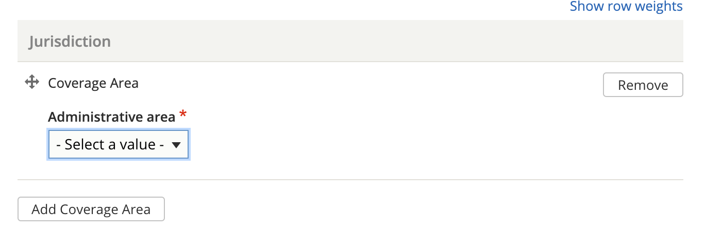
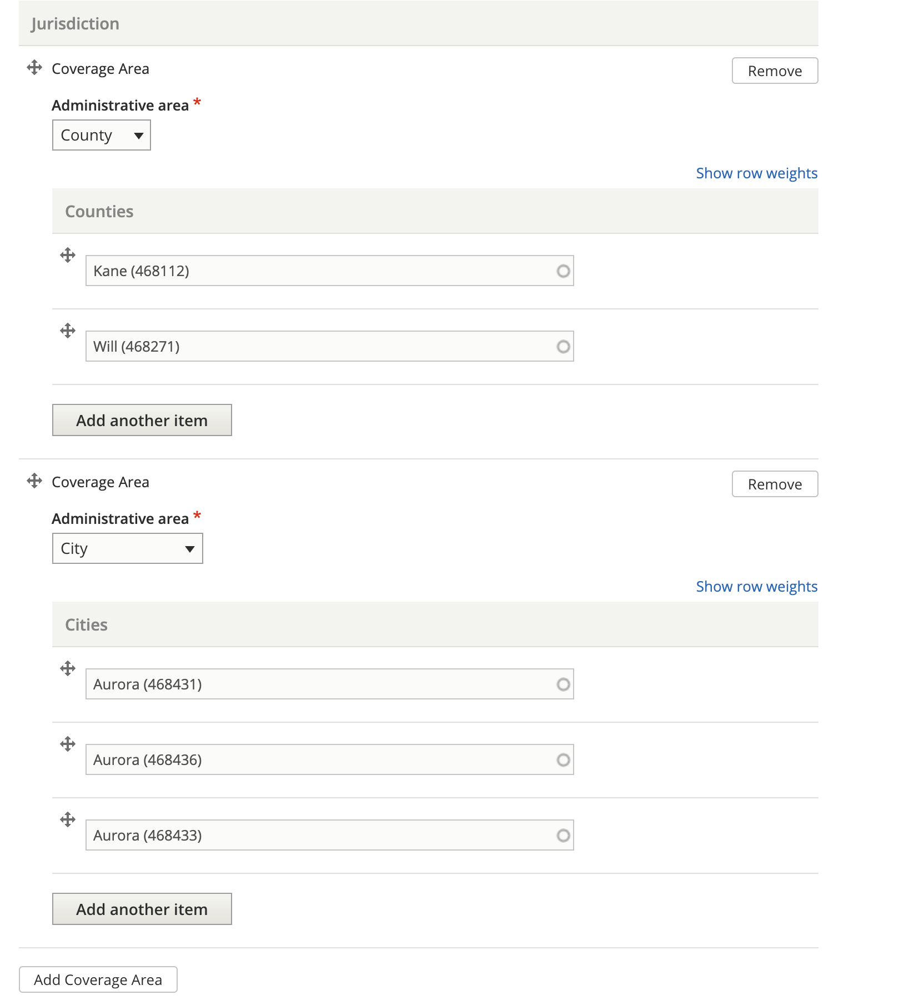

Coverage area
Coverage area, or jurisdiction can be set for various elements of structured content (for example, a how-to may have a coverage area that is different from the coverage area for a legal form).
Coverage area can be set at different levels:
Country (defaults to United States)
State (defaults to Illinois)
County
City
Zip code
A coverage area can have more than one entry in a specific administrative area (for example, multiple counties).
Multiple coverage areas can be set to allow content to be tagged across different administrative areas (for example, by tagging the county of Kane and the city of Aurora, which crosses county lines).
Jurisdiction and Negate Jurisdiction
In structured content that can be tagged to a jurisdiction, there are two fields: Jurisdiction and Negate Jurisdiction that rely on the coverage area. Negate jurisdiction should only be used when content applies statewide except for one or more cities or counties.
Examples:
Content applies the same statewide, then the negate jurisdiction field would not be used and the jurisdiction would be set to State - Illinois.
Content applies differently in Cook county, there would be two pieces of content:
Content A would be set to a jurisdiction of Cook; this step would not be delivered for users outside of Cook county.
Content B would be set to a jurisdiction of Illinois and a negate jurisdiction of County = Cook; this step would not be delivered for users inside Cook county.
Content applies statewide and another step applies just in Cook County (except Chicago), and another applies just in Chicago:
The statewide step would be tagged to Illinois and no negate jurisdiction set
The Cook county step would be tagged to County = Cook with a negate jurisdiction of city = Chicago
The Chicago step would be tagged to city = Chicago
A Chicago user would see the Chicago and statewide step; A suburban Cook county user would see the Cook step and the statewide step. All other users would get the statewide step only.